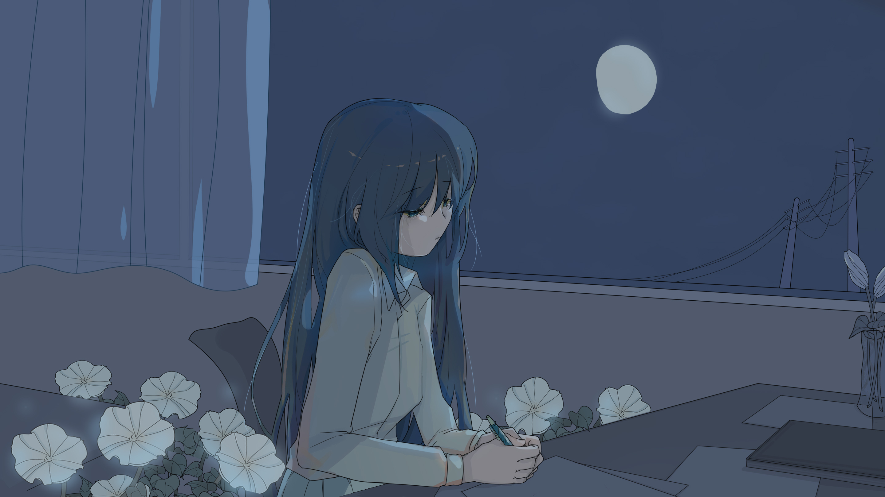

Ipomoea alba

Art by Moshi
作品介绍
《Ipomoea alba》是整张同名专辑的起点，也是所有后续情绪与意象展开的源头。
最初的歌词写在一个淡白色的雨天。
窗边空气潮湿，带着泥土与花朵混合的气味。
黑色笔记本摊开着，像一块被雨水轻轻浸过的夜面。
那些句子更接近一种淡色的、缓慢浮现的意识
像在虚无感中突然找到的一个锚点，
不喧哗地让人继续停留在现实里。
歌曲的主色调因此被定格为白色与淡蓝。
不是纯粹的明亮，而是雨后光线穿过云层时那种柔软的反射。
创作完成后，这首作品由起子录制钢琴与吉他。
他的角色更接近于将抽象情绪转化为可听见现实的人，并未介入词曲写作本身，却在声音层面赋予了这首歌最初的形体与温度。
也正因为如此，《Ipomoea alba》在听感上始终保留着一种
“尚未被现实完全侵入”的轻盈。
它不像后续作品那样沉重或破碎，更像一段仍停留在雨后窗边的时间切片。
从这首歌开始，夜颜（Ipomoea alba）、雨季、笔记本、湿气、
以及“在虚无中寻找存在事实”的主题逐渐展开，
并最终延伸为整张专辑的序曲。
如果说后来的作品记录的是情感的消耗、撕裂与告别，
那么《Ipomoea alba》所停留的，是那一刻一切尚未崩塌之前的安静成立。
歌词（Part 1）
「いつのまにか心を奪われていた」
雨上がりの午後にそう書いた
窓の外、湿った匂いと夕暮れの中の顔を
こんな未来を思い描いている
言葉の幽霊のように
喉の奥に残っている
君がいるから、
意味のないものにさえ 生きる理由を探してる
この両手で何も掴めなくても
あとは二人だけでいい
また果てしない虚無感がやってきた
人は誰でも必ず死ぬんだよ、
それを君も知っている
だからもっとそばにいてくれ
少しでも欠けているといらいらしてしまう
これじゃ余計な悩みが増える
今は正しくなくてももう大丈夫だよ
「no」がもたらした決意の「yes」…
歌词（Part 2）
いつのまにか心を…
浮かんだ心臓も、ヨルガオも
すべてノートにある
君の笑顔だけは記録できない
あのね
この人生は永遠の夜のようだった
やっと、誰かが…
その人は君
君がいるから、君がいるから、
夜明けにはまだ遠いけど、
君がいてくれれば、
今は生きていける
君もそうでいられるように